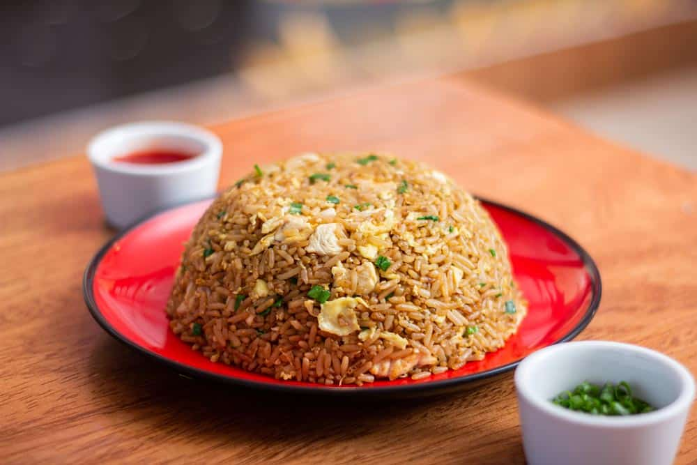
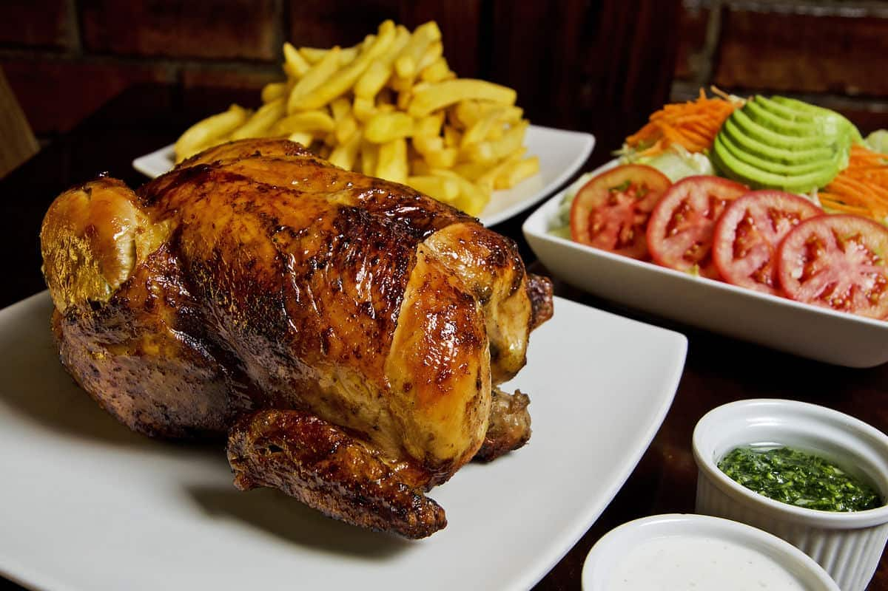

Arroz Chaufa
El arroz chaufa es un plato típico de la cocina peruana, una deliciosa combinación de arroz frito con ingredientes como pollo, huevo y verduras.
Más información
Kebab
El kebab es un plato originario de Oriente Medio, que consiste en carne a la brasa servida en un pan de pita con verduras y salsas.
Más información

Pollo a la brasa
El pollo a la brasa es un plato típico de la cocina peruana, que consiste en pollo marinado y cocido a la brasa, servido con patatas y ensalada.
Más información